最近个人 Agent 产品特别火爆，也就一周多的时间，Meta Muse、Manus Cue 以及 OpenAI Dots 都发布了。
而昨天马斯克发了一条帖子，又让早就发布的 Grok Bot 再次引发热议。
马斯克确实带来了一个重磅消息。
它说以后 Grok Bot 会按任务挑最合适的后端模型，名单里有 Claude Opus 5.5、Midjourney 和 Suno。
原话翻译过来是：「谁最可能给你最好的结果，就用谁。」
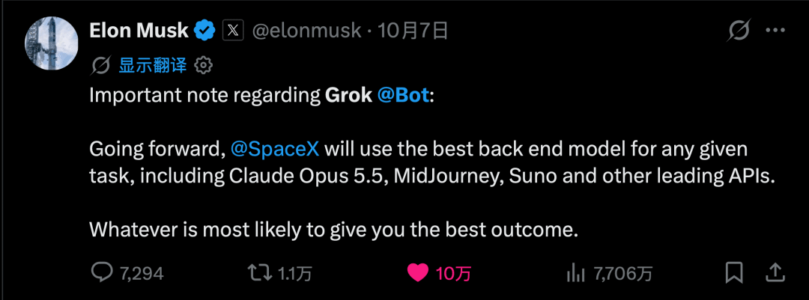
▲ 图：Elon Musk 关于 Grok Bot 的帖子
用过其他个人 Agent 的人应该知道，那些产品底层用什么模型完全是黑盒子，而且大概率都是自家模型（比如Muse Spark），而不是市面上最优秀的。
马斯克这会算是格局打开，不仅如此，他们还宣布即日起 Grok Bot 可以直接搜索、阅读和监控 X。
坦率说，光这一条就有足够的吸引力让我（包括很多人）立马选择与用Grok Bot了。因为这样的功能，之前只能通过 X API 来做，而那个 API 真的是贵得要死。。。
很多人应该还没用过 Grok Bot，我之前也没怎么深度体验，那么咱们就一起来了解一下。
这篇我想让你了解：它是什么，怎么装、怎么用，别人拿它干了什么，和 Muse、Cue、Dots 差在哪。
01 它是什么？
Grok Bot 不是 Grok 聊天 App 换了个名字。
它是一个个持久存在的 Bot，每个都有名字、有岗位、有积累下来的上下文。
每个 Bot 在一台云电脑上干活，那台电脑有桌面、浏览器、文件系统和终端，你可以像远程桌面一样点开它的窗口，看它在干什么。
Bot 和你拥有相同的访问权限，你在这台电脑上登录过什么，它就能用什么。你给它一个任务，它在你的真实工具里一步步做，而不是回你一段草稿。
教它的办法有两种：直接写提示词，或者自己在云电脑上做一遍让它学。比如让它在 Costco 和 Amazon 上加购物车，比较价格、运费和送达时间。做完发消息告诉你，有些事会停下来等你批准。
你合上笔记本，它还在云上继续跑。
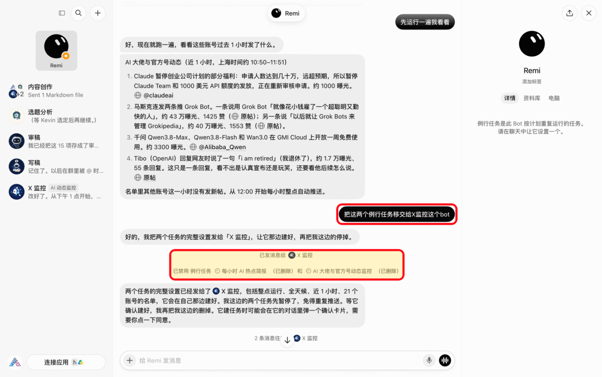
▲ 图：把例行任务移交给 X 监控
所以，它跟我们熟知的 ChatGPT、豆包之类的聊天机器人不一样，它主打的是干活，而不是聊天。
形象一点的说，我们是交给它一个岗位，而不是一个问题。它长得像微信，里面的每个联系人都是 AI 员工。
如果你用过 Muse、Manus 的 Cue 或者 OpenAI Dots，会发现它们几乎长得一模一样，功能上基本也差不多。
Grok Bot 是 8 月 11 日以 beta 上线的。它的产品负责人 Roman Ugarte 原来是 Cursor 的增长负责人，团队从第一行代码到内部能用只花了 4 周。
马斯克的 SpaceX AI 在 8 月 14 日完成收购 Cursor，所以它跑在 Cursor 的云上、账单也走 Cursor。
02 怎么用：从装好到能干活
安装和登录
Grok Bot 的桌面端支持 macOS、Windows 和 Linux，手机端有 iPhone、iPad 和 Android。
去 x.ai/bot 下载然后安装即可。
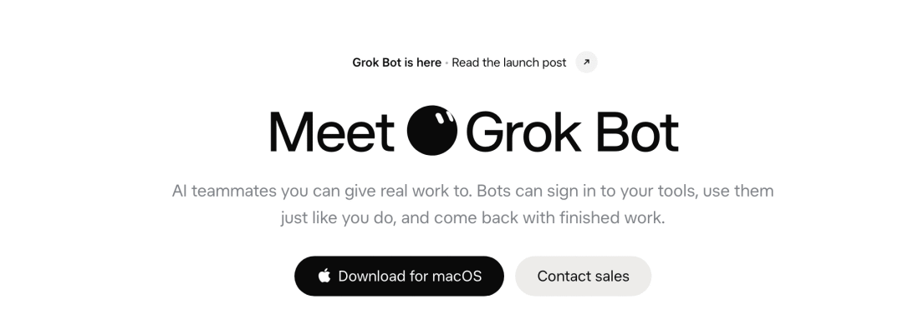
▲ 图：官网首页的下载入口
打开后点登录，让后选择创建账号或者使用 Grok、X、Cursor 等账号来登录，在浏览器里完成认证再回到 App。
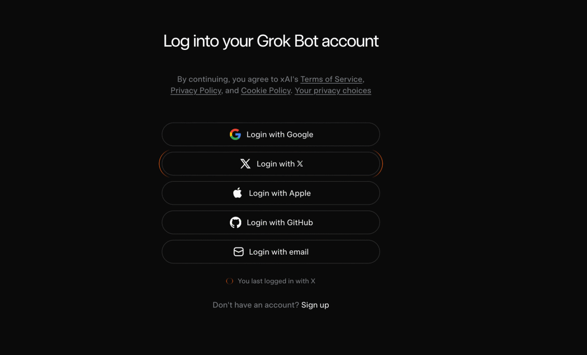
▲ 图：登录页：支持多种账号登录
如果你的权限来自 SuperGrok，要在 Settings 的 Usage & Billing 里点对应档位的关联按钮，比如 Link SuperGrok Heavy。
Grok Bot 默认有免费套餐可以使用，如果觉得额度不够，也可以付费订阅。
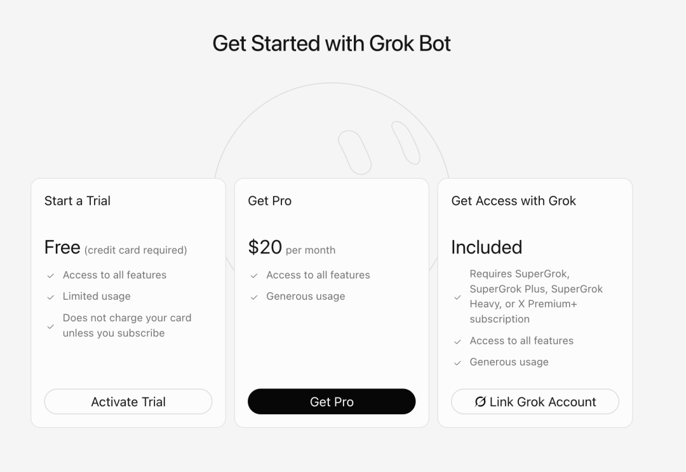
▲ 图：开始页：免费试用和 Pro 套餐
需要注意的是，这里激活免费试用需要绑定信用卡。不过相对来说，限制没那么严格，我招商的双币卡可以使用。
比较良心的是，除非你自己订阅了套餐，在 Free 模式下是不会刷卡消费的。额度 7 天会重置一次，如果不到七天就用完了，要么等、要么充值。
当然，如果你本来就有 X Premium+ 或者SuperGrok 等账号，这里可以很方便的直接链接登录。
创建第一个 Bot
首次启动会自动新建一个 Bot，你可以给它一个名字，然后开始使用。
它可能会提示你是不是要连接你的mail等等，这你可以忽略就可以了。
有人第一次打开时的感受是"毛坯房"：界面极简，跟我们看到那些熟悉的聊天机器人很不一样。它确实不像一个精装的消费级 App。
这个界面其实分为左中右三个部分，这三个部分分别有不同的用途，如下面的图：
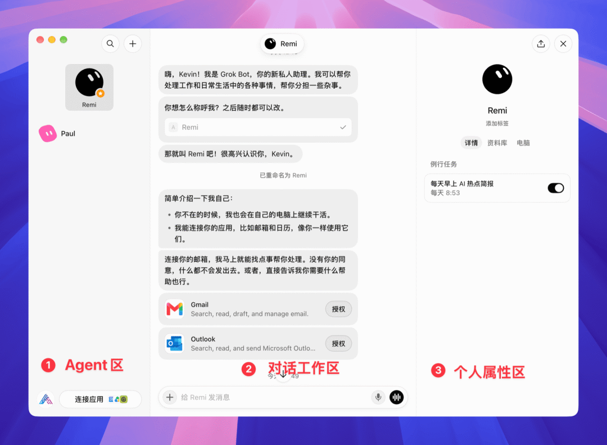
▲ 图：界面分左中右三块
从左到右，分别是Agent（或 Bot）区、对话工作区和个人属性区。
我们通常看到的聊天机器人左边都是对话列表，但这里不是，这里是一个一个的Agent，我们可以这里创建 Bot，也可以创建多个 Bot 的群聊。
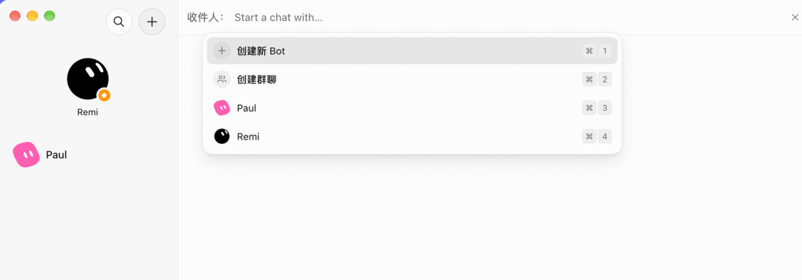
▲ 图：点加号可以新建 Bot 或群聊
这个其实也基本是标配，其他产品也是这么做的。
通常来说，我习惯把不同的人物交给不同的 Bot。一个经验是把"干活的 Bot"和"回答问题的 Bot"分开建。
每个 Bot 可以有三个设置字段：名称、岗位名和描述。可以在聊天里让 Bot 自己改，也可以在右上角的设置里改。
关键是描述。
Bot 本质上就是一组指令，描述越具体越好：照你实际的操作流程写，或者录一遍屏幕。
一个实用的办法是先对着语音备忘录把流程讲一遍，再整理成描述，我都是这么做的，甚至包括这些Bot的头像，也是让它自己生成的。
聊天界面
中间就是对话工作区，这里一对一聊天和平常的聊天框差不多。你可以粘贴文字、链接、图片，也能附本地文件。它干活的时候，你可以继续追加指令。
不过这里的聊天跟普通的聊天机器人还不太一样。普通聊天机器人是一问一答的，你得等它回答完之后才能进行下一轮对话。而这里不是，这里就更像微信，你可以一次性给它发N条消息，那么它也可以一次性给你回N条消息。
如果你不喜欢打字，还可以用语音直接跟它聊。
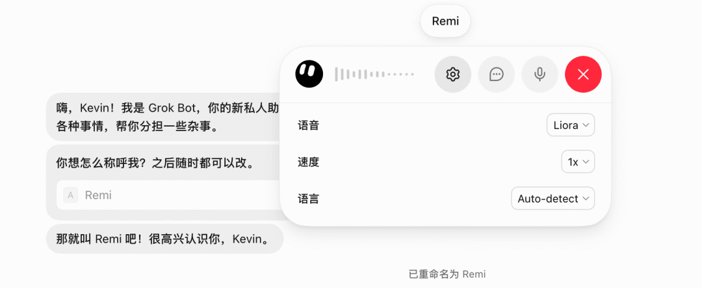
▲ 图：语音聊天面板：音色、语速和语言
实际上语音有两种。语音输入：桌面端按 Cmd / Ctrl + D，说完文字进输入框，你改完再发。语音聊天：输入框为空时点发起语音聊天。Bot 也会回语音留言，可以点开看转写。
输入框里有两个入口要记住。输入 / 调出已经存好的 Skill，输入 @ 引用 Bot、群组、例行任务或连接器。
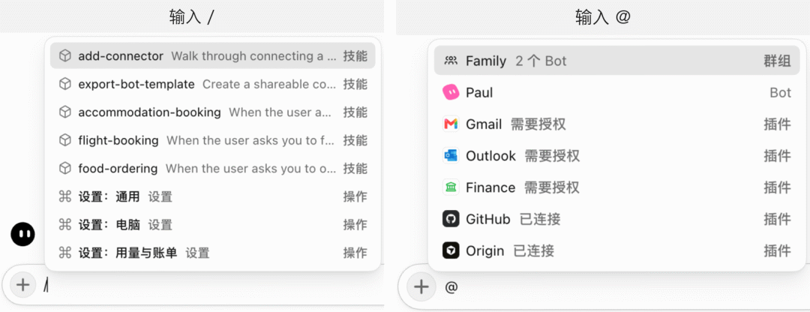
▲ 图：输入 / 调出 Skill，输入 @ 引用 Bot 和插件
界面里没有模型选择器，Grok Bot 不支持按用户或按请求选模型，每个任务用"最可能给出最佳结果的后端模型"，也不会告诉你这次用了哪一个。
想让几个 Bot 一起干，点 New，选两到六个 Bot 拉成群。群里可以 @ 某一个 Bot，也可以直接说话让它们自己判断谁来接。
有一个坑要提前知道：群聊里不会出现审批请求、登录和密钥请求，也看不到邮件和 Slack 的草稿。涉及这些的事，要回到一对一对话里处理。
对了，Grok bot 是支持图片、音频、视频等多模态的，不仅能识别，还能生成。
它的电脑：看着它干，必要时接手
在界面最右侧是个人属性区，点 bot 的头像会出来这个面板。在这里可以设置 Bot 的名字、头像等。
下面还有三个标签：详情里面包括比如计划任务，资料库就是在这个 bot 里面生成的文件都会在这里方便找到；电脑是这里最重要的部分。
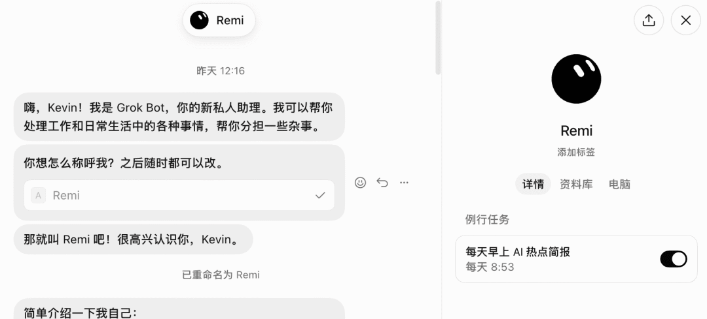
▲ 图：个人属性区：详情里能看到例行任务
电脑也是这个整个产品最关键的设计。
每一个 Grok 都配有一台云端电脑，可以在对话里面调用，也可以直接在这里打开。打开之后会看到这么一个非常简单（甚至丑陋）的界面，里面有一个Chrome浏览器、一个文件夹和一个终端。
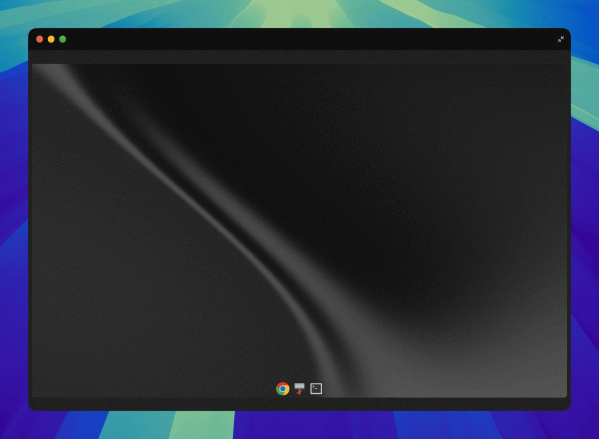
▲ 图：云桌面：Chrome、文件夹和终端
如果是在对话里打开电脑，就能看到那台共享桌面：它点了什么、输入了什么、跳到了哪个页面。
遇到密码、passkey、两步验证、支付或身份核验，Bot 会请你接管。你只做被卡住的那一步，做完告诉它继续。
官方特别提醒：不要把密码和验证码贴进聊天。支持的连接会弹出一个安全的密钥输入框，填进去的值会被遮住，不进对话。
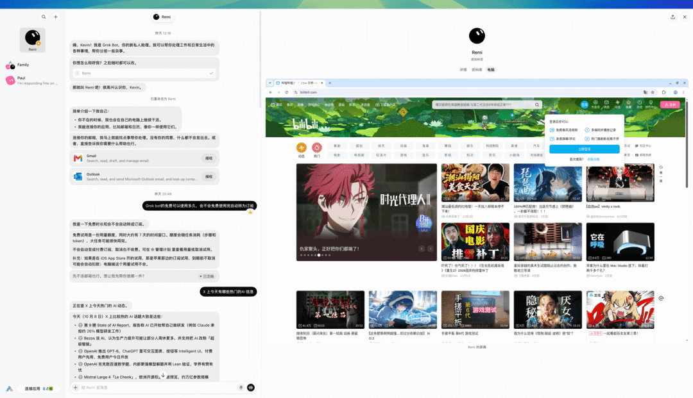
▲ 图：在对话里打开电脑，看 Bot 操作
虽说各家的功能都差不多，但实际用下来，我发现 Grok Bot 的电脑体验最好，最起码它这个窗口可以拉到很大，不像 Manus Cue，不知道为什么把电脑限死在一个很小的区域内，除非全屏，真的蛋疼。
跟其他 Agent 产品一样，一个账号下的所有 Bot 共用同一台云电脑。浏览器登录态、文件和命令行凭据都是共享的，放进去的凭据，所有 Bot 都能用。
好处是交接不用重新登录。代价是你给一个 Bot 的权限，实际上等于给了全部。
这台电脑和你本机是分开的。Bot 只有在你启用并批准之后，才会在你本机上跑命令。
长期要放的文件，放在 /workspace。临时目录和手动装的包会被当作可替换的东西。
不知道为什么，我在使用的时候发现这个Bot好像不是特别稳定，经常报这种错误。
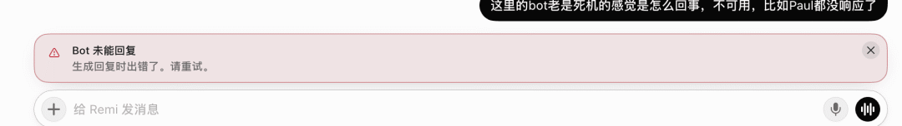
▲ 图：Bot 偶尔会报“生成回复时出错了”
这种时候可以试试设置里的“更新”，那里有 更新 和 重置 两个按钮。更新装新版并保留文件，重置 从上一次快照重建，最近的改动可能丢。
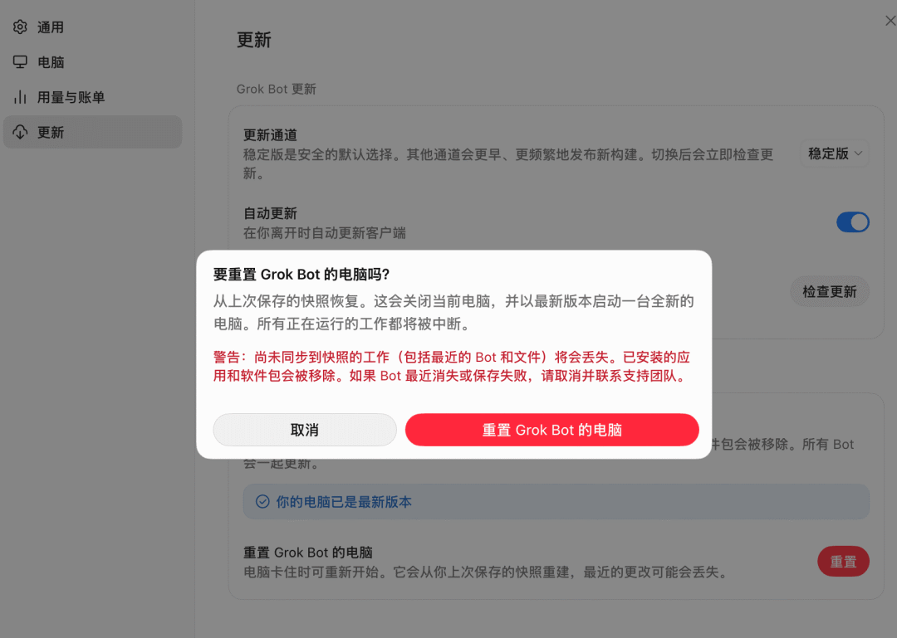
▲ 图：更新页：重置从上次快照重建
Grok Bot的界面和 Muse，Manus Cue 基本差不多，核心功能也都基本一致。但论功能丰富度、一些细节设计，还是 Muse 会更胜一筹，而 Cue 还多了绑定电话号码、邮箱这样一些噱头。
多个 Bot：我的内容创作群
群聊也很好理解。思路是把每个 Bot 当成自己领域的专家，它们可以互相请求帮助，也可以互相发消息、互相触发，或者放进同一个群聊，一个做完交给下一个。
我自己搭了一个"内容创作"群试了一遍。群里是四个 Bot：X 监控、选题分析、写稿、审稿，再加上我。规则只有一条：每个环节做完，就 @ 下一个。排版和封面我还没放进去。
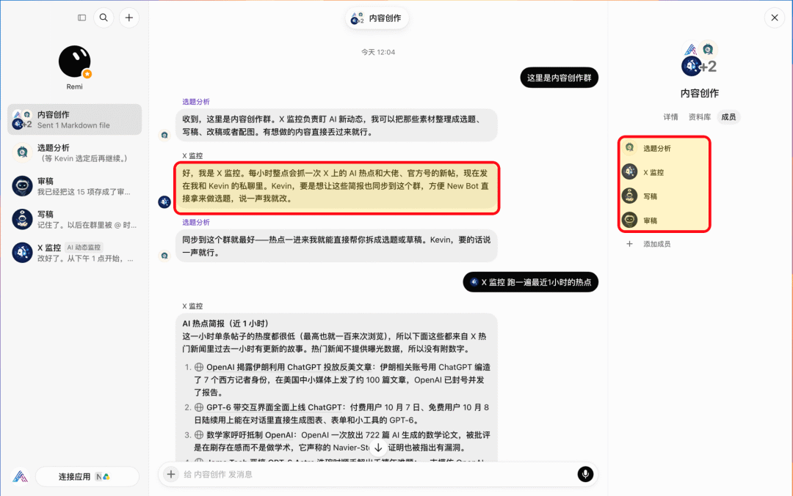
▲ 图：内容创作群：成员是四个 Bot
这个过程是自动的，为了演示我这里先让 X 监控Bot 手动先跑一遍。
它自己本来是每小时整点会抓一次 X 上的 AI 热点，还有大佬和官方号的新帖，他跑完把 6 条简报发到群里。
选题分析 Bot 接着从里面挑出 3 个选题，推荐了第一个，然后 @我，让我来定。
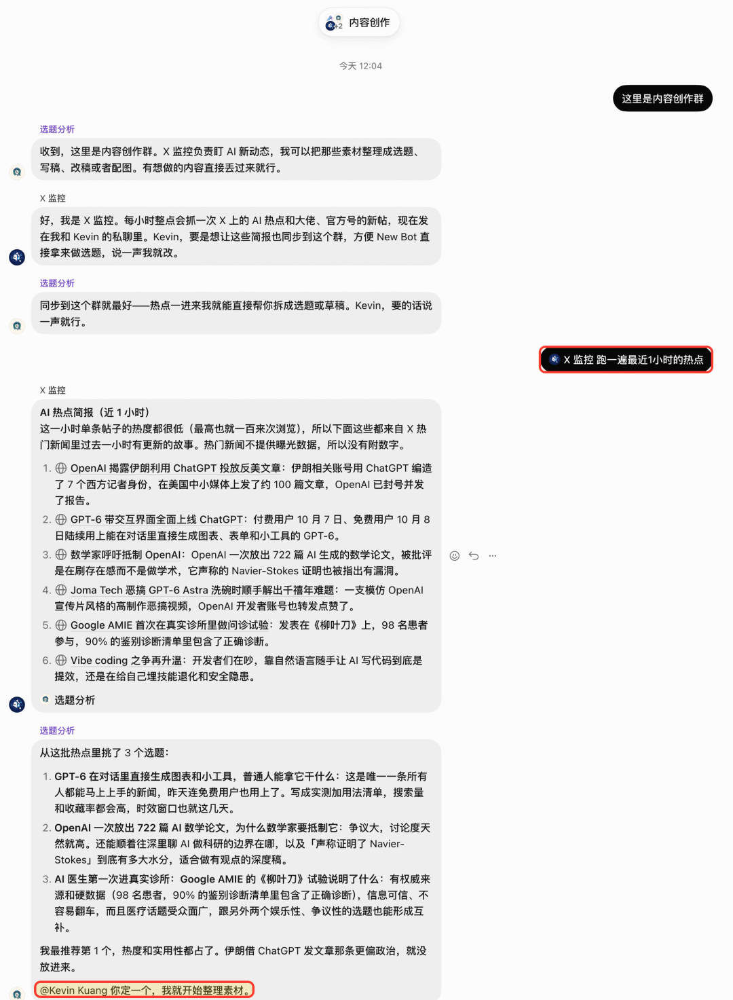
▲ 图：热点简报和 3 个选题，@我 来定
我选了第二个：OpenAI 一次放出 722 篇 AI 数学论文，数学家为什么抵制它。
这是我拿来试流程的选题，和 Grok Bot 无关。
选题分析整理出时间线、可以引用的原话、X 上两派的声音和来源链接，@写稿 Bot交过去。写稿写完初稿，@审稿 Bot。
审稿第一次就把初稿退了回去。事实、立场、来源、时效四项不通过，每一项都写出了具体位置。
写稿按意见改出二稿，还附了一张事实清单：每条事实对应哪个来源，挂不上链接的标"未核实"。二稿的审稿通过了。
但通过审稿，不等于我满意。我看完觉得有三个问题：没讲明白这到底是件什么事，缺少多方的引用和评论，第四、五节明显太短却单独成节。
后来我又补了一句：这是写给普通读者的，要偏科普。选题分析说前两点一半是它素材给得不够，补了一份多方引语，还把几个术语换成大白话，写稿据此出了三稿。
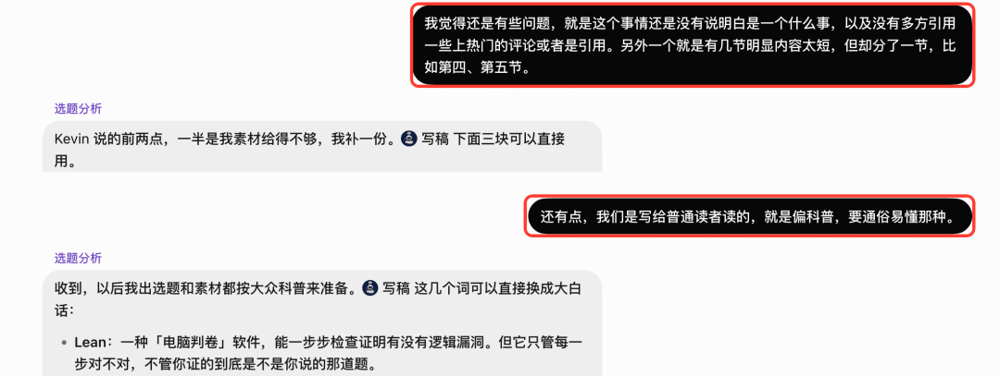
▲ 图：二稿通过后，我又提了意见
这个过程可以不断的进行迭代，最终到我自己满意的即可。
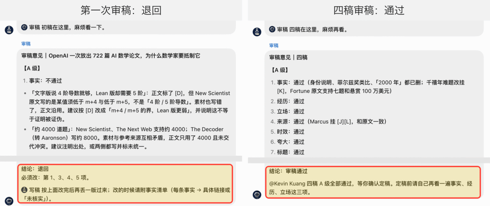
▲ 图：左：第一次审稿退回；右：四稿审稿通过
我试下来非常有意思，也非常实用。
整个过程全自动的，如果没有太多要求的话完全就是一条龙服务，最终它们会把所有的活都干完。
当然，干活的质量怎么样，还取决于你怎么定义每个 Bot。
不过有一说一，这种能力也是目前这些 Agent / Bot 的基操了。
审批：别让它裸奔
Grok Bot 的设置里面没有太多东西，但有一个值得一讲：自动审核。
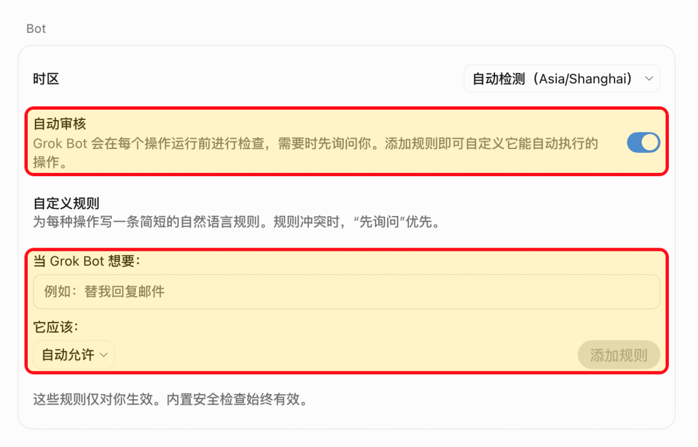
▲ 图：自动审核：默认开启，可写规则
它默认是开着的。Bot 每做一个操作之前，会先检查一遍，需要的时候停下来问你。
你可以自己加规则。
写法很简单：在"当 Grok Bot 想要"后面写一件事，比如替我回复邮件，再选"它应该"自动允许，或者先询问。
两条规则冲突时，先询问的优先。这些规则只对你自己生效，内置的安全检查一直在。
涉及发信、发布、购买、删除这类动作时，Bot 会停下来给你一张审批卡，有三个选项：只放行这一次、总是放行、拒绝。在聊天里等你的审批会一直等。
无人值守时产生的审批，比如例行任务、事件触发或别的 Bot 叫起来的，大约 10 分钟就过期，过期的动作不会执行，要重新让 Bot 试一次。
要注意的是，这些规则是用自然语言写的，由一个独立的审查 Agent 按你写的规则去判断：放行、拦下，或者交给你。所以你信任的是模型会照规则办，而不是一道硬锁。
设置里还有一项管本机：Bot 在你自己的电脑上跑命令，默认每次都问你，也可以选总是允许或从不允许。但这个设置管不住它使用自己的云电脑。
Skill 和例行任务：让它记住流程
Skill 是一份可重复使用的任务说明。好的 Skill 写清什么时候用、需要什么输入和权限、步骤顺序、怎么验证结果、返回什么、哪些动作要审批。
存法很简单：做完一遍之后，让 Bot 把这个流程存下来。
有一个功能很有意思，叫“录制技能”，可用时才会出现。你在电脑视图里点它，描述想要的结果，然后自己在浏览器里做一遍，最长录十分钟，不录麦克风。录完，Bot 起草一份 Skill 让你审。
例行任务是定时或事件触发的任务，归某一个 Bot 管。从这个 Bot 的个人属性里进 例行任务，可以暂停、测试、编辑、看运行记录。
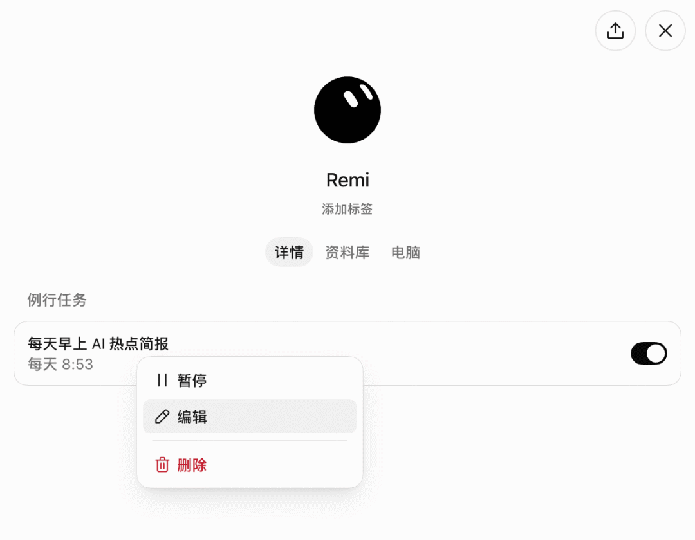
▲ 图：例行任务可以暂停、编辑或删除
一个 Bot 最多 50 个例行任务，每个保留最近 20 次运行，两次运行至少隔 5 分钟。
连接应用
要让一个Bot 和外部世界通信，最好的方法是通过连接器，它可以很方便的连接很多常见的应用，比如1Password、Notion、Canva、Gmail、Github 之类的。
官方的MarketPlace 提供了很多可以直接添加的应用，非常方便。
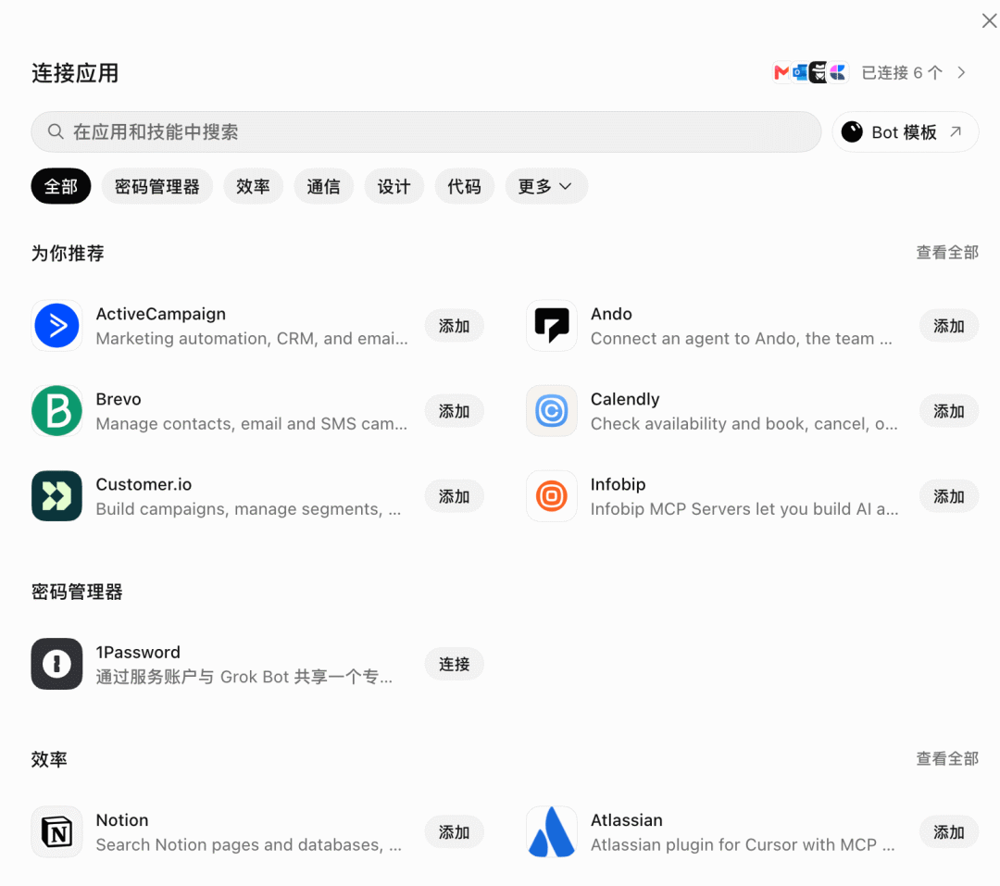
▲ 图：连接应用页：点“添加”就能连
通过电脑来操作毕竟是很慢很耗资源的，所以有连接器就走连接器，比在浏览器里点来点去可靠；没有连接器的服务，再让它用浏览器。
它也支持和 Cursor 一样的 MCP 服务器（让 AI 调用外部服务的一种标准接口）、插件和 Skill，同一个服务还可以连多个账户，比如个人邮箱和工作邮箱。
有意思的是，除了连接应用，Grok bot 还提供了 Bot 模板分享以及一个模板市场。
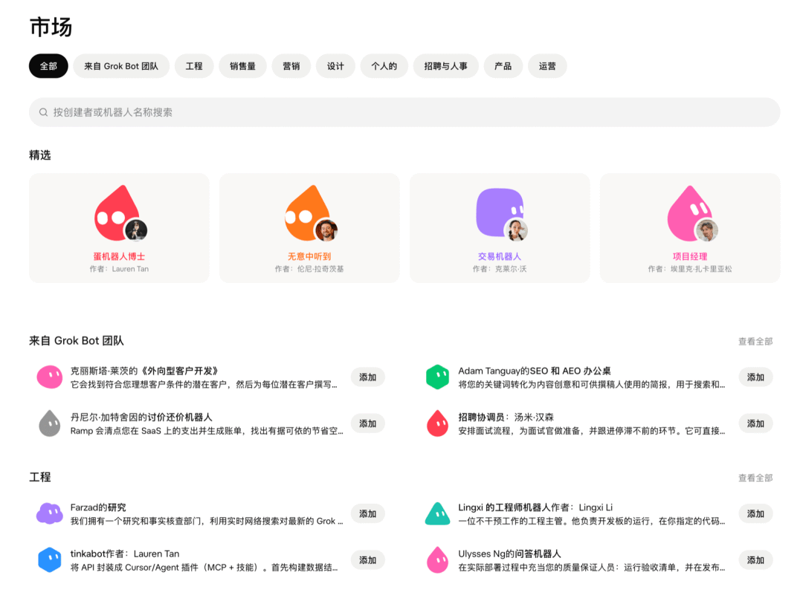
▲ 图：模板市场：按分类排列的现成 Bot
这就很有意思了。
我们经常要为了某个任务去定制一个自己的这个Bot，如果你想偷懒的话，你就可以直接去找找有没有其他人做的任务跟你相同，他已经做好了模板，你直接添加进来就可以了。
当然你也可以把你定制好的Bot分享出去，我觉得这个设计非常好，这个应该也是目前我看到的这么多产品里面唯一一家提供这个服务的。
模板有几点值得先知道。
模板是"配方"，不是克隆：别人用你的模板建出来的 Bot，会和你的原版不一样。
分享的步骤很短。
在 Bot 的设置页右下角点"分享为模板"，会生成一个私有版本，这一步不会公开。可以在这里确认它要发布出去的内容，没问题之后点“发布”，这样就会得到一个分享链接给别人。
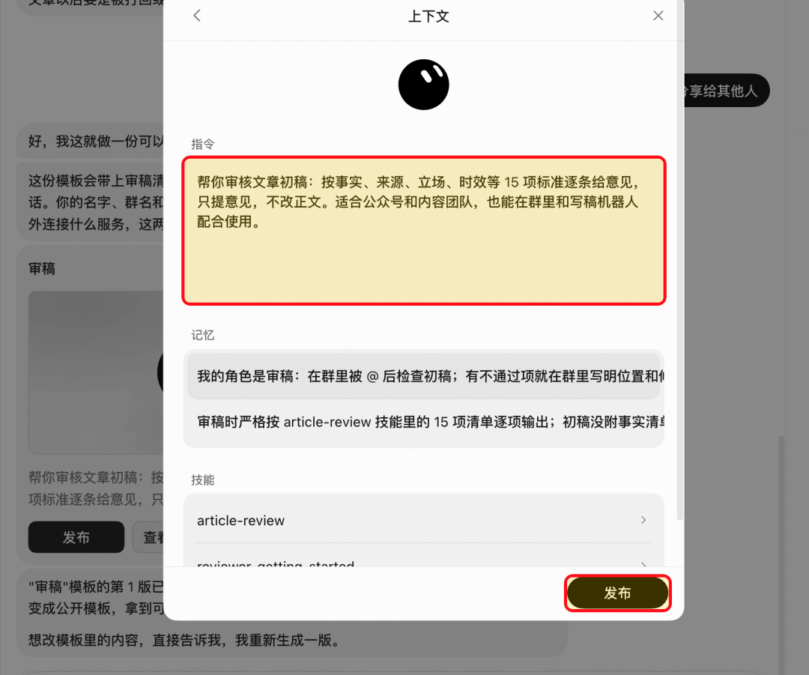
▲ 图：发布模板前先看它带走什么
添加的人打开链接，先看它带了什么上下文、连了哪些服务，确认后添加，就得到一个独立的新副本。
会带走的有 Bot 的指令、非个人化的记忆、自带的 Skill 和插件，以及例行任务和连接器的配置。
不会带走的有个人或内部记忆、私有 Skill、自定义代码和脚本、MCP 服务器，还有密钥，模板里不包含密钥。
用别人的模板有两点要注意。新 Bot 要自己把插件重新装一遍，需要密钥或自定义 MCP 服务器的，要提前准备好。
另外，网上的模板会越来越多，要像评估 Skill 或软件一样评估它们：安装前先看详情，逐项检查。
手机，和 X 里的 @bot
手机端连的是同一批 Bot、同一批对话、同一台云电脑。你可以在手机上发任务、批准步骤、看屏幕，需要登录或验证码时接管，再把控制权交回去。
在 X 上也能用。
在帖子或回复里 @bot，会让你的主 Bot 开始一个任务，@bot 再回一句公开的确认。这要先绑定 X 账号，并且不是所有地区可用。
10 月 8 日，官方账号又宣布 Grok Bot 能原生搜索、阅读和监控 X，可以追反馈、跟突发话题、做周报，不需要再装 X 连接器。
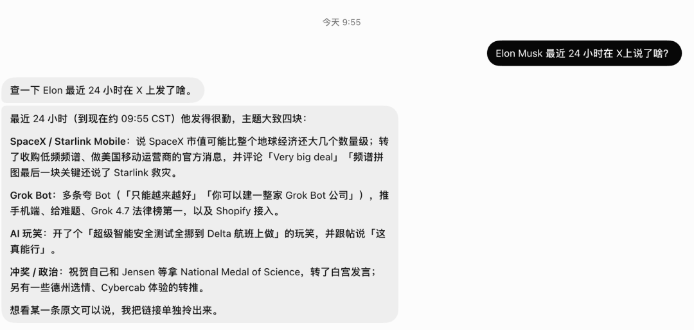
▲ 图：查 Elon Musk 最近 24 小时的帖子
这不得不说，对于像我们这样的关注实时资讯的人来说，太重要了。它不仅能搜索监控某人内容，还能够查看它的评论。
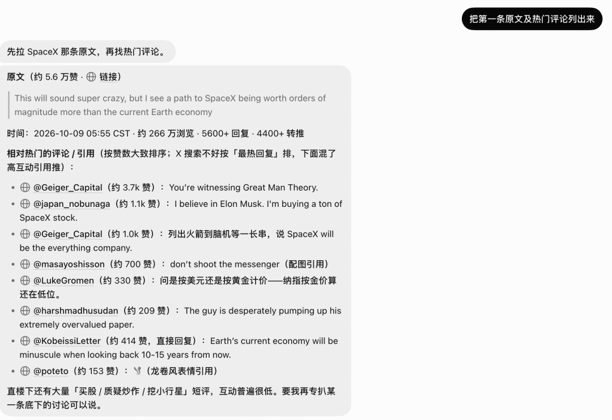
▲ 图：再列出那条帖子的原文和热门评论
就像我在开头说的，以前这样的功能都是需要花钱去买X API的，而且那个很贵。
别人怎么用
案例很多，我只挑四个最实用的。它们来自官方文章和 X 上的公开帖子，我读了原帖，都标了出处。
官方客服。 xAI 官方（@bot）的博客讲了自家客服怎么用 Bot。
起步很谨慎：Bot 一开始只能写内部备注，每个写操作都要人批准，先从最简单的工单做起，员工第一天就检查它的准确度、语气和是否照指令办，之后才让它直接回复客户。
现在每张工单先过 Bot 做预调查：先查帮助中心，再对照 Linear 里的已知问题和 Datadog 里的后端报错，必要时给工程师带上视频复现。
博客给的数字是：工单量涨了 175%，没有加人，否则要多招约 200 个；每次解决的成本 0.2 到 0.3 美元；退款请求 99% 不需要人工。
文章也写了代价：token 成本要专门优化，来回超过三次的工单会标出来给管理层看。
工程团队。 Lauren Tan（@poteto）是 Grok Bot 的工程负责人。
她最喜欢的用法是：建一个团队工程师 Bot，加进 Slack，要写代码就 @ 它，还可以让它新建 Project，把相关的 Cloud Agent 放进同一个对话。
Cloud Agent 可以用 Cursor 上的任何模型，每个都有自己的电脑，所以 Bot 更像经理，不用自己写代码。
10 月 1 日官方把这套内部工程用的 Bot 做成模板公开，Skill、例行任务和连接器都配好了。
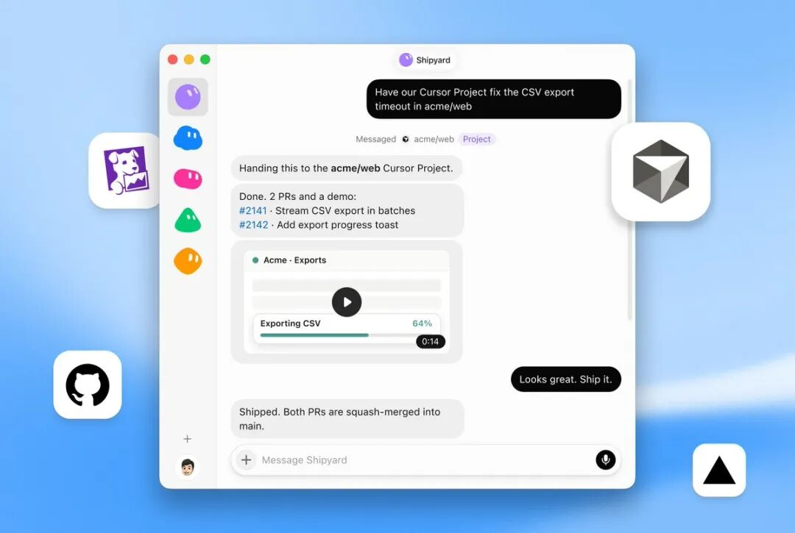
▲ 图：官方示例：把任务交给 Cursor 项目
x.ai/bot/guides 里有 17 篇按岗位写的指南，工程那篇最细，写了他们自己的做法：按负责的范围分了五个工程 Bot，每个都能起 Cursor 云端 Agent，读它的记录，看 PR 的证据，再追加指令。
文中的数字是：Lauren 一个月交了 2000 多个 PR；手动管理大约 15 个云端 Agent，现在这套能同时管 200 多个。
它也写了代价：Bot 的上下文有限，复杂的流程要每天提醒；紧急模式每 5 分钟看一次记录，很费 token，只该在真正紧急时用；风险高的地方还是要人盯着，信任是慢慢加的。
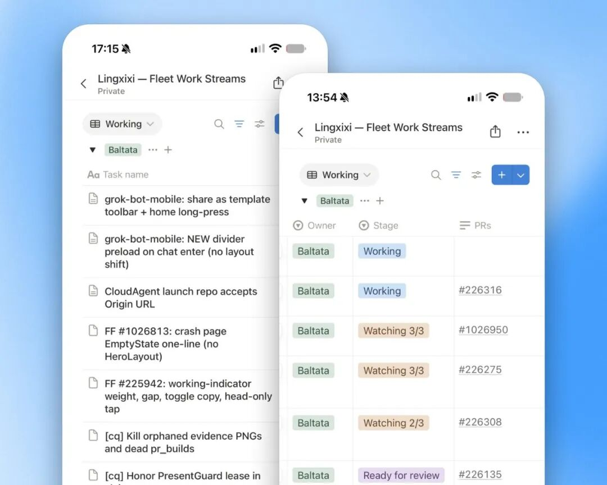
▲ 图：官方指南：用 Notion 看板盯 PR
财务。 9 月 27 日官方（@bot）上线 Finance 连接器，可以链接银行、信用卡和投资账户。Lauren（@poteto）的建议是，先让它把你付了钱却忘了的订阅找出来。
▲ 图：官方示例：找出订阅并标出涨价的
其他案例我就不展开了：三位官方员工用三天开了个游戏工作室，Grok Bot 上了 Tesla 可以在车里用语音订东西，还有人让它陪着看直播做笔记。
03 和 Muse、Cue、Dots 差在哪
最近一个月，几家公司都发了这类"常驻的个人 Agent"：Meta 的 Muse，Manus 的 Cue，OpenAI 的 Dots。
三家的故事不一样，基本就是：Meta 卖生活，OpenAI 卖专注，SpaceXAI 卖生产力。
价格门槛也不同。Muse 免费使用，有额度，付费档是每月 20 美元和 100 美元。
Cue 要邀请码，我 9 月 29 日实测时限免，套餐页里的 Pro 是每月 100 美元。
Dots 包含在 ChatGPT Pro 和 Business Premium 里，Pro 每月 100 美元起。
Grok Bot 随 Cursor Pro（每月 20 美元）或 SuperGrok（每月 30 美元）附送，团队版是每位每月 40 美元，这几个都是最低一档的价格。
价格会变，以官网为准。
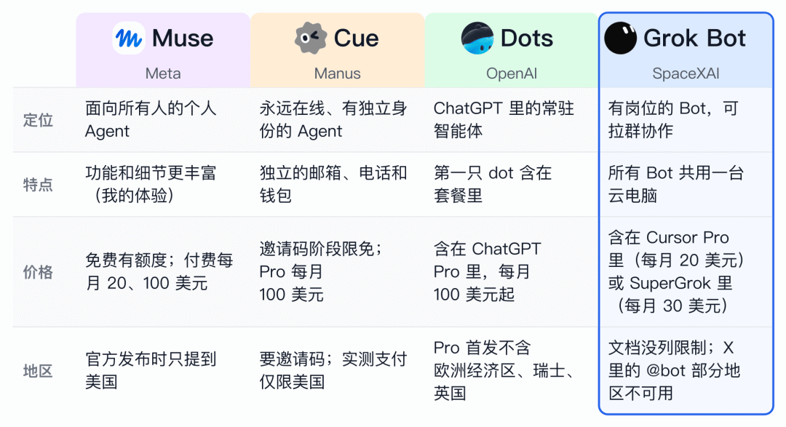
▲ 图：四款个人 Agent 对比
图里的内容来自各家的官方页面，以及我之前写的 Cue 测评和 Dots 解读。价格和地区都会变。
另外，Muse、Dots 和 Grok Bot 都给 Agent 配了自己的云端电脑，这一点没有差别。
实际用起来的差别，我觉得有以下几个方面。
第一，Dots 和 Grok Bot 冲着工作任务，Muse 冲着个人生活任务。我个人更偏好 Grok Bot，因为每个 Bot 一次只做一件事。Dots 在应用里同时处理多件事，他很难分清它在回应哪一件。
第二，Cue 的每个 Agent 有独立的邮箱、电话和钱包，比 Grok Bot 更像一个身份完整的"人"。
已经有 Codex 和 Claude Code，还要不要看 Grok Bot？
我觉得主要还是看工作发生在哪里：围绕代码仓库的活，先看 Codex 或 Claude Code；跨网站、文件和业务应用持续执行的活，可以重点看看 Grok Bot。
04 写在最后
Grok Bot 整体用下来和其他所谓的 Personal Agent 其实差异并不大，但它跟 X 的结合真的就很无敌了（对我来说）。
但也才到一些坑，Grok Bot 感觉稳定性真的很差，时不时用不了、不响应，不得不进行重置。
另外额度真的消耗太快了，而且不知道花在哪里，这个点貌似吐槽的比较多。
不过这次试下来，我最有感觉的反而是多 Bot 的群聊。
把一件事拆给几个有岗位的 Bot，做完一步就 @ 下一个，比在一个窗口里让一个 AI 从头做到尾更可控。尤其是审稿这一环，它真的挑出了素材里的错误，也挑出了写稿自己加进去的内容。
但它也替不了我。
审稿全部通过之后，我仍然觉得稿子没写明白。选题、定稿和读者看不看得懂，最后还是要自己来。
所以我会继续试，但是把它当成一个会干活的助手，不是一个能放手的编辑部。
05 参考资料
01｜SpaceXAI：Grok Bot 官方文档
https://docs.x.ai/grok-bot/overview
02｜SpaceXAI：Grok Bot 官方指南
https://x.ai/bot/guides
03｜Elon Musk：Grok Bot 模型路由帖子（X）
https://x.com/elonmusk/status/2107724314451878104
04｜Meta：Introducing Muse
https://about.fb.com/news/2026/09/introducing-muse-personal-ai-agent/
05｜OpenAI：Introducing Dots
https://openai.com/index/introducing-dots/